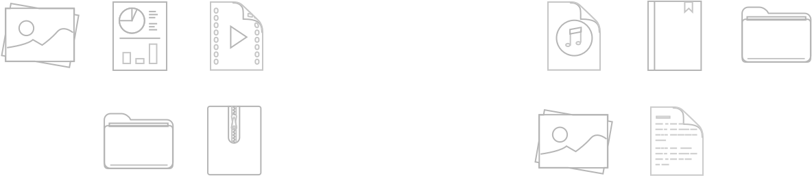

Wipe duplicates off the face of your Mac with Gemini 2. It's fast, precide, and adapts to the way you use it.
Detects Duplicates
Locate duplicates, even if they're stashed in a folder far, far away.
Gemini's new algorithm is laser accurate at detecting useless copies.
Searches for Similars
Identical or not, copies are a waste of space. Now, Gemini 2 searches for files that look alike - and puts them into spotlight.
Scans Photos & iTunes
Most of your duplicates are probably music files and pics. Gemini 2 finds them in their natular habitat: your iTunes and Photo libraries.

And Learns from You
As you use Gemini 2, it learns to select and delete duplicates the way you do. Almost like it's human.
1 of 5
Next